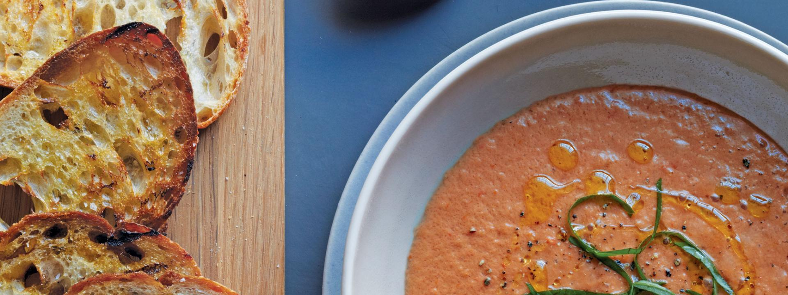

Spanish Cuisine
Spain's varied Mediterranean cuisines includes the cooking of Andalusia, Murcia, Catalonia, Valencia, and the Balearic islands. Paella is a characteristic Spanish dish, originally from Valencia, radiating early on to Catalonia and Murcia along Spain's Mediterranean coast. It comes in many versions, and may contain a mixture of chicken, pork, rabbit, or shellfish, sautéed in olive oil in a large shallow pan, with vegetables, and typically round-grain rice (often of the local albufera, arròs bomba, sénia varieties or similar) cooked to absorb the water and coloured with saffron. The dish may be varied with artichoke hearts, peas, sweet peppers, lima beans, string beans, or sausages. 